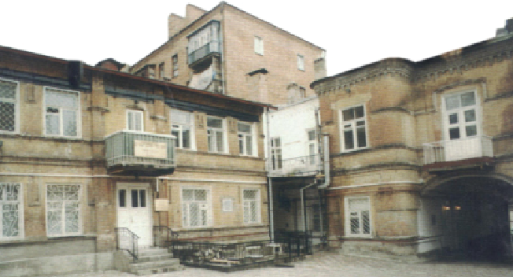

כאן נקשו הבולשביקים ברצותם להכנס להתוועדות א בשנים האחרונות לחייו, התגורר אדמו”ר
בשנים האחרונות לחייו, התגורר אדמו”ר הרש”ב ומשפחתו בעיר רוסטוב הסמוכה לנהר דון. מעיר זו המשיך להאציל מאורו והודו על עדת החסידים. רבים מהם היו מגיעים אליה כדי לשהות במחיצתו של הרבי, והרבי מצדו הנהיג את עדת החסידים בקבלה ל’יחידות’, באמירת דא”ח, בנתינת עצה לכל שואל; מדי חג ויום טוב נערכו התוועדויות גדול

בשנים האחרונות לחייו, התגורר אדמו”ר הרש”ב ומשפחתו בעיר רוסטוב הסמוכה לנהר דון. מעיר זו המשיך להאציל מאורו והודו על עדת החסידים. רבים מהם היו מגיעים אליה כדי לשהות במחיצתו של הרבי, והרבי מצדו הנהיג את עדת החסידים בקבלה ל’יחידות’, באמירת דא”ח, בנתינת עצה לכל שואל; מדי חג ויום טוב נערכו התוועדויות גדולות של שמחה והרבי היה משוחח עם החסידים, מחזקם ומעודדם.
לא זמן רב נמשכו ימים מאירים אלו. עבים שחורים הקדירו ובאו על שמיה של רוסיה. בשנים אלו נערכה מלחמת אזרחים קשה ועקובה מדם בין ה”לבנים” לבין ה”אדומים”. אלה גם אלה מצאו ביהודים שעירים לעזאזל והיו מכלים בהם את חמתם.
בחורף תר”פ התקדמו הבולשביקים לעבר רוסטוב. הכול ידעו כי סכנה טמונה רבה בבולשביקים, ובבית הרבי התכוננו לעקור מן העיר, אולם בטרם הספיקו לארוז את חפצי הבית, אלו כבר נכנסו לעיר ושוב אי–אפשר היה לממש את היציאה.
דומה היה כי אצל הרבי נתהפכו סדרי בראשית. מאז כניסתם ראו שינוי גדול בהנהגת הרבי. לפתע היה מסתגר רבות בחדרו ומתבודד בינו לבין עצמו; כמעט לא קיבל חסידים, והיה במצב של עבודה עצמית.
אם לא די בכך, הרי שבראש חודש שבט תר”פ, לאחר תפילת שחרית, קרא הרבי לאחד החסידים שיכנס אל חדרו הקדוש וביקשו לומר לכל החסידים בשמו כי הוא מבקש מהם שלא יבואו אליו להתפלל, גם לא כדי לשמוע דא”ח ואפילו לא ל’יחידות’, משום שאינו חפץ בכך שהבולשביקים יידעו על קיומו. הלה מיהר לבצע את שליחותו והעביר את בקשתו של הרבי לאנ”ש בכל אתר ואתר.
ואכן, מאז, כמו עננה שחורה ירדה על חצרו של הרבי. אותה חצר חסידית שוקקת חיים הפכה לשקטה. אווירה של תוגה שררה במקום. החסידים כמעט לא פקדו את בית הרבי, עובדה נדירה ביותר. רק כאשר התעורר עניין דחוף שהיה צריך ללבן אצל הרבי, או אז היו מגיעים, וגם אז בתחבולות ובהיחבא.
מצב זה נמשך כל חודש שבט ומחציתו של אדר.
ב
בפורים החליטו החסידים כי אי–אפשר לתת לפורים לעבור סתם כך, בלא ציון מיוחד, והחליטו להכנס לביתו של הרבי ולו להתוועדות קצרה. הרבי נתן את הסכמתו, אך הכול הבינו כי הרבי לא יאריך הרבה בשולחנו, ישמיע שיחה קצרה מעניינא דיומא ומיד לאחר גמר אמירת דברי התורה, ילך כל אחד וישוב לביתו.
הפחד לא היה בכדי. באותם ימים נהגו השלטונות הבולשביקים ביד חזקה. הם הוציאו שורה של תקנות מחמירות בניסיון למנוע הפיכת אזרחים נוספת בכל מחיר. התקנות קבעו כי בלילה אסור להימצא ברחוב לאחר השעה שבע. אפילו ביום היו נמנעים ללכת עד כמה שאפשר, אלא במקרה דחוף ביותר. כל התוועדות של כמה אנשים נאסרה בהחלט ונחשבה לעוון חמור ביותר.
לא פלא אפוא שהחסידים שהגיעו לביתו של הרבי להתוועדות פורים, ישבו בתנועה של כיווץ ובחשאיות. כל אחד מהם נטל ידיים, אכל כזית ‘המוציא’ מתוך ידיעה כי יצטרך לקום מהמקום מיד כשיתאפשר, ולחזור הביתה במהירות האפשרית.
הרבי עצמו נטל ידיים, ולאחר מכן מזג יי”ש ובירך ‘לחיים’. בו במקום הרגישו הנוכחים בשינוי במצב רוחו של הרבי, כאילו רוח אחרת נחה עליו. הרבי החל לעודד את החסידים להוסיף בשמחה. הוא לא הסתפק בכך, ואף הוציא מכיסו סכום כסף והורה להביא עוד הרבה בקבוקי משקה. לאחר מכן ציווה לנגן ניגונים שמחים כפי שנהג בחג פורים בכל השנים.
“עמדנו מבוהלים ומשתוממים”, כתב לימים אחד החסידים, “היינו מוכנים לעזוב את בית הרבי מיד לאחר שמיעת התורה. אך כשראינו את השינוי שחל ברבינו, קרבנו אליו והתחלנו לנגן בקול רם ובהתרגשות גדולה עד שהקולות בקעו את קירות הבית ופרצו אל הרחוב. שכחנו לגמרי באיזה מקום ובאיזה זמן אנחנו נמצאים”.
אל השולחן הובא משקה לרוב והחסידים שראו את מצב רוחו המרומם של הרבי, התעודדו אף הם ורוחם הייתה טובה עליהם. הרבי עצמו השגיח שכל אחד מהמתוועדים ישתה יי”ש, והוא עצמו התחיל לנגן בקול רם עד שקולו היה נשמע מחוץ לבית, אף על פי שדירתו הייתה במקום מפורסם ביותר בעיר…
בני משפחתו של הרבי פחדו מאוד. הרבנית ביקשה ממנו, ממש התחננה, כי החסידים ינמיכו את קולם וינגנו בלחש פן ישמעו בחוץ ויבולע לכולם, אבל כשהחסידים ראו את הרבי מעודד את השירה ביתר שאת, לא הרהיבו עוז בנפשם להמרות את פקודתו.
גם בנו יחידו של הרבי, אדמו”ר מהוריי”צ נ”ע, נבהל מאוד ולא ידע לשית עצות לנפשו. הוא חשש שמא בסופו של דבר יתנקם זה באביו הרבי. אך הרבי חיזק אותו בכל פעם בדבריו המתוקים המלאים חכמה ועונג רוחני. פעם אחת אף נטל אותו בידיו הקדושות בתנועה של קירוב ואמר לו:
“יוסף יצחק. אל תירא! אינני מתפעל מהם! שלום יהיה לנו! אינני מתכוון בחדרי חדרים אלא בכל היציאה וההתפשטות שלנו! בכל ה’עצמיות’ שלנו, אמשיך ללכת, אם באופן של סדר והדרגה ואם כ’מדלג שור’, כך הנני ‘שומע’ וכך הנני מרגיש, שלום יהיה לנו, כי הקליפה לגבי הקדושה איננה כל מציאות, רצוני שהקדושה תהיה בהתגלות…”
פניו של הרבי היו להבות ודבריו חוצבי להבות אש. כל הסדר באותו לילה היה אצל החסידים לפלא רב. “הרבה פעמים היינו אצל הרבי בלילות של שמחה בעת התוועדות, אבל באופן כזה של שמחה לא ראינו אצלו אף פעם. דברי התורה שהשמיע אז היו עמוקים וטמירים”, ממשיך אותו חסיד לתאר את זיכרונותיו.
ג
לפתע, בשעה שהיו כולם שרויים בשמחה עצומה, הגיעה הידיעה המרעישה כי הבולשביקים עורכים עתה סיור ברחובות העיר ובודקים בכל בית ופינה אם האזרחים שומרים על חוקי החירום. עוד הוסיפה הידיעה, כי בעוד רגעים אחדים יגיעו הבולשביקים לביתו של הרבי.
חיל ורעדה אחזו בחסידים, שכן באותה שעה היה קהל גדול של חסידים בהתכנסות בביתו של הרבי, ואסיפה זו הרי אסורה היא לפי החוק. לאיש מהנוכחים לא היה ספק כיצד ינהג השלטון במפרי החוק והסדר. אך הרבי לא הניח להפסיק אפילו רגע אחד מהשמחה ומהניגונים “וראינו שהעניין הוא משונה ופלאי, כי לא היה אף פעם באופן כזה, וממש ראינו מופתים גלויים ממנו באותו לילה”. פניו של בנו יחידו, הרבי הריי”צ, כמו נפלו עוד יותר. המתח היה ניכר היטב על פניו.
אף על פי כן, הרבי המשיך לשבת על כיסאו ולא הפסיק אף לא לרגע מדבקותו ומדבריו הקדושים. המסובים שהבינו היטב את המשמעות החמורה של מסיבה זו והתוצאות העלולות לבוא, ניגשו אל רבינו וסיפרו לו מהמתרחש כעת בעיר, אך הרבי לא שת לבו לכך. אדרבה, הוא זירז את הנאספים שלא להפסיק מלנגן ולשמוח ביתר שאת - הן פורים היום…
באותו רגע נשמעו מהלומות בשער הבית. החסידים הביטו ברבי, כמו שואלים מה לעשות כעת. הרבי הורה להם בניע ראש קל לפתוח בפניהם את השער ומיד החזיר פניו אל החסידים כאילו מאום לא אירע.
חברי הבולשת נכנסו לתוך הבית והתבוננו מרחוק. אחד החסידים אזר אומץ וניגש אליהם והעיר להם כי הרבי עסוק כעת מאוד ואין לו פנאי לשוחח עמם.
“מתי יתפנה?”
“מאוחר יותר”, השיב החסיד בפשטות, “רק בעוד שעתיים בערך תסתיים המסיבה”… הנוכחים הביטו בו מלאי חרדה.
למרבה הפליאה הבולשביקים לא הגיבו והסתלקו כלעומת שבאו…
רגש של הקלה ירד על החסידים ושוב החלו לנגן והשמחה מילאה את לבבות כולם. הרבי מצדו פתח שוב בדברי תורה, ובניגונים נוספים, ניגונים עליזים וניגוני דבקות.
שעות מספר חלפו ושוב נשמעו מהלומות בשער הבית. החסידים סחופים היו בשמחת החג לא שמעו כלל את הדפיקות. הדפיקות הלכו וחזקו עד שהד קולן כבר נשמע היטב בפנים הבית. כולם ידעו במי מדובר - אנשי הבולשת חזרו ובדעתם לערוך כעת חיפוש מדוקדק.
המצב היה בכי רע. השולחנות היו עמוסים ביינות ובמשקות חריפים, דבר האסור לפי החוק. כמו כן הצטברו סכומים הגונים שהיו מונחים בקערה על השולחן, נדבתם של החסידים לצורכי מצווה - וגם זה נאסר לפי החוק החדש.
לאיש מהחסידים לא היו אשליות. לבם החסיר פעימה ולא ידעו כיצד להיחלץ ממצב חמור זה.
הרבי שהרגיש במבוכה ובפחד, הורה שלא לגעת בשום דבר ולא להוריד מעל השולחן מכל הנמצא עליו.
“פתחו להם. כי במצב שאני נמצא עכשיו אין לי שום פחד מהם!”
הדלת נפתחה ועל הסף הופיעו הבלשים, הפעם חמושים בנשק חם… הם התקרבו לשולחן ועמדו בקצהו האחר, בדיוק אל מול פני הרבי. אבל הרבי לא שם לבו אליהם, אלא החזיר פניו אל החסידים ואמר בקול בוטח:
“נתחיל לומר דא”ח והם יתבטלו מאליהם”.
בו במקום החל באמירת מאמר דא”ח מבוססים על הפסוק “ראשית גוים עמלק ואחריתו עדי אובד” כאשר תוכן המאמר עוסק בכך שה’קליפות’ הן העדר המציאות ואין להן מציאות אמיתית. דרוש זה נמשך על פני שעה ומחצה.
ד
במשך כל זמן אמירת הדרוש עמדו הבולשביקים מול פני הרבי ולא גרעו ממנו עין.
לאחר שסיים לומר את הדרוש, הסתלקו אלו לדרכם מבלי להגיב מאום על כל שורת “הפשעים” שהתרחשו לנגד עיניהם…
* * *
את מאורעות אותו פורים כתב הרה”ח ר’ שלמה זלמן הבלין ז”ל, שזמן קצר לפני פרוץ מלחמת העולם הראשונה יצא מירושלים לרוסטוב כדי לבקר את כ”ק אדמו”ר הרש”ב נ”ע. כיוון שפרצה המלחמה, נשתבשו הדרכים והיו בחזקת סכנה, ושוב אי–אפשר היה לחזור לארץ ישראל. הרב הבלין נותר אפוא במשך תקופה במחיצתו של הרבי, ובתוכה גם בחג הפורים תר”פ, הלוא הוא הפורים האחרון בחייו של הרבי בעלמא דין.
את רשמיו מאותו פורים העלה הרב הבלין במכתב שכתב ביום ראשון, י”ט באדר תרפ”ד, אל ידידו הרב דוד שיפרין, כשהוא מסיים:
“ראינו אז בחוש מופת גלוי, ממש לא יאומן כי יסופר, והגם שכולנו רעדנו מפחד, בטחנו בהשם יתברך ובעבדו הנאמן. והתקשרנו בחזקה אל רבינו ולא חשבנו מאומה. רק השתוקקנו לא להחסיר מפיו אף מילה. כה ישבנו שם עד לערך שעה ארבע לפנות בוקר.
“שתים עשרה שעות רצופות ארכה סעודת הפורים, והייתה זו מעין מסיבת פרידה. לאחר שבועיים עלתה נשמתו הקדושה למרומים.
“סעודת פורים זו, על כל מה שראינו בעינינו, לא תמוש מזיכרוני לעולם”.
(“תורת שלום” - ספר השיחות; “אוצר סיפורי חב”ד” חלק י)